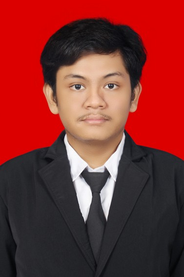

|  | Rafi Pramasukma Ekhaputera, S.TR.TSaya umur 22 tahun, Tempat tanggal lahir Madiun, 2 Mei 1999, Sehat dan sudah mengikuti vaksin Covid 19 dosis 1 & 2, Lulus jurusan Teknik Electro Otomasi, Institut Teknologi Sepuluh Nopember (ITS Surabaya). Diwisuda pada tanggal 9 Oktober 2021. |
| Institut Teknologi Sepuluh Nopember Bachelor Degree in Automation Electrical Engineering, 3.05/4.00
|
| 2018 | Himpunan Mahasiswa Teknik Elektro Otomasi Security and Clearance Staff of Industrial Automation and Robotic Competition
|
| 2019 | Himpunan Mahasiswa Teknik Elektro Otomasi Security and Clearance Expert of Industrial Automation and Robotic Competition
|
| 2019-2021 | Laboratorium Mikroelektronika dan Sistem Embedded Asisten Laboratorium
|
| HTML | ⭐⭐⭐⭐⭐ | PHP | ⭐⭐⭐⭐⭐ | Bootstrap | ⭐⭐⭐⭐⭐ | mikrokontroler | ⭐⭐⭐⭐⭐ |
| CSS | ⭐⭐⭐⭐⭐ | Calibration Sensor | ⭐⭐⭐⭐⭐ | Arus Lemah | ⭐⭐⭐⭐⭐ | ||
| PLC Progamming | ⭐⭐⭐⭐⭐ | Java script | ⭐⭐⭐⭐⭐ | Arus Kuat | ⭐⭐⭐⭐⭐ |